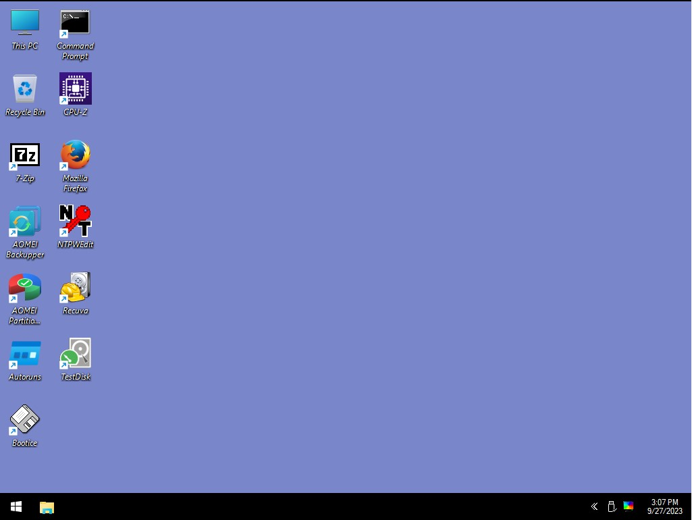

Other articles:
This is my new rescue system:

Requirements for target:
1. 2GB of RAM
2. a 2GB or larger Flash drive
How to flash to USB:
1. Download Rufus
2. Select the downloaded ISO file.
3. Select the target flash drive.
4. Click "START".
Download 64-bit
Written by Krzys.